Why did we chose these themes?
The disrespect of men lead us here.
From a God punishment, to human exploitments, to extremes and excess, passing through a chess game against humanity, to humanity not believing anything anymore. Wait, Aliens have invaded us. Run!
Discover our Text;Gate journey!
The black plauge
1348
Introduction:
Latin Yersinia pestis, it was the 1348 Plague that hit Florence, resulting in the death of 3/5 of the population: tens of thousands of humans.
This epidemy spreads out fast and social conditions soon became cruel: some, scared to death, avoided the infected, others help them finding a cure.
People abandoned family and friends, stopped working, fled cities and shut themselves off from the world. Some felt that the wrath of God was descending upon humanity, so they prayed for Him.
Read this poem of the 17th century describing the scared and scary stereotypical Plague Doctors
As may be seen on picture here, In Rome the doctors do appear, When to their patients they are called, In places by the plague appalled, Their hats and cloaks, of fashion new, Are made of oilcloth, dark of hue, Their caps with glasses are designed, Their bills with antidotes all lined, That foulsome air may do no harm, Nor cause the doctor man alarm, The staff in hand must serve to show Their noble trade where'er they go Poem of the 17th century.
A simple batterium called Coccobacilius formed this terrifying social experiment leading people to totally lose control.
One of the witnesses of the Black Death was Boccaccio: an italian writer and real life testimony of the Black Death in Florence.

his father (a wealthy merchant) and his wife die in front of him. He becoming the heir of the family fortune. The Decameron begins with a detailed description of the Death.
For efficiency of the documentation Here is the Decameron Preface where Boccaccio focused on the degrade of humanity. For clarity of reasons we will show both the Italian (original) and English extracts.
“Grande moria”, or “Black Death” originated in the big Asian continent, probably in Mongolia. From there, the plague spread through the Silk Road and reached Samarcanda to then spread all over Middle East. The major infectors were rats and fleas: nurtured with the blood of infected animals, they transmited the bacterion to healthy rats and humans. The disease effect was incresead by the life condicions and the inexistant hygene, it was impossible to limit the infection. The syntoms were buboes and bulges, resulting in fast deaths.
What Boccaccio shows us is the dissolvment of any societal form or of any human relationship.
Who survived, rich or poor, knew they escaped an epochal scourge.
How I applied:
I took inspiration from the blood shed by the Plague to build a drop falling down from the center of the title. This drop animation runs forever.
The Disclaimer background depicts the terrifying Plague Doctors. Their typical costume consisted of an ankle-length overcoat and a bird-like beak mask, often filled with sweet or strong-smelling substances to protect themself. along with gloves, boots, a wide-brimmed hat, and an outer over-clothing garment. They became a symbol of Death, so I opted for them for satiritical as well as symbolic purposes.
Colonization
1800-1900
Introduction:
This theme will highlight the important aspects of design and styles that were adopted in the colonization of the sub-continent by the British Empire between the colonial rule from 1858 to 1947.
Examples:
1. This is an example of a typical document produced during this era. As you can see, joined handwriting was a very common style using black ink which was slightly tilted towards either left or right.
2. Most of the paper that was used during this era were parchment papers for both single pages and scrolls.
3. A lot of scrolls and pages during this era were signed off with wax seals. In many cases these seals were pressed with the emblem of the lords or the family.
4. This is a typical example of a scroll style that was used within the Empire during this age. Many messages were written in a scroll like this by the British Empire which were read out loud in public by messengers.
5. Another important think that was widely used by the British Empire in this era was invisible ink which was recently developed to send secret messages to other concerning parties

6. A very typical style of letters during this era would be to have stamps attached to them. Usually they have very sepia-like colors and dotted borders.

How I applied:
1. The main text that appears on the home page has an effect which highlights how the invisible ink appears on the pages.
2. The buttons on the home pages are inspired by wax sealed
3. Some drop down link and buttons are inspired by scrolls. In some cases when you hover over them it gives an effect that the scrolls are opening.
4. The background is parchment paper themed. They appear to look irregular because thats how many parchment papers were combined together to form a long paper.
5. The font style is inspired by the handwritings usually found in typical documents of this era of the British Empire.
6. The pictures that are presented within this theme were shown in a way that they look like typical stamp papers that were typically used at the time period.
References:
https://rbi.org.in/Scripts/pm_britishindia.aspxhttps://www.dafont.com/lord-british.font?text=british
https://www.dafont.com/mk-british-writing.font?text=british
https://www.qdl.qa/en/invisible-ink-intercepting-post-second-world-war
https://www.apfelbauminc.com/blog/post/british-empire-stamps
Prohibitionism
1920-1933
The capability of a class to derive properties and characteristics from another class is called Inheritance. Inheritance is one of the most important feature of Object Oriented Programming. Sub Class: The class that inherits properties from another class is called Sub class or Derived Class. Super Class: The class whose properties are inherited by sub class is called Base Class or Super class. Using inheritance, we have to write the functions only one time instead of three times as we have inherited rest of the three classes from base class(Vehicle).
The Cold War
1947-1991
The word polymorphism means having many
forms. In simple words, we can define
polymorphism as the ability of a message
to be displayed in more than one form.
A real-life example of polymorphism, a
person at the same time can have
different characteristics.
Like a man at the same time is a father,
a husband, an employee. So the same
person posses different behavior in
different situations. This is called
polymorphism. Polymorphism is considered
as one of the important features of Object
Oriented Programming.
In C++ polymorphism is mainly
divided into two types:
1. Compile time Polymorphism
2. Runtime Polymorphism
Conspiracy
1950-2000
Introduction:
Here we will cover the most prevelent design aspect during the era of conspiracy theories. Government secrets, aliens among us, confidential files, being watched by aliens etc. are some aspects highlighted here.
Examples:
1. One of the most important aspects of these designs were that the secrets or theories were thought to be kept in very old storage or Government facilities. Some of which were actually true. These mostly consisted of old paper with smudged style ink. A lot of these secret files were guarded by top secret or confidential stamps/markings.

2. In many of the conspiracy theories, we see a constant rise of alien speculations. During this era, alot of celebrities and famous people were thought to be aliens, lizards or some species other than humans.
3. There is also a prevelent conspiracy theory about birds. It is believed that birds are not real, specifically targeting pigeons. They are drones made by the Government to spy on us.

4. One of the most popular conspiracy theory is of celebrities being part a secret and elite group called 'The Illuminati'. In many cases, bright red markings were used on the photos of these celebrities to make highlight the evidence hinting towards their secret life
How I applied:
1. On the main page I used a stamp effect showing how files were typically categorized using such stamps
2. The use of red circles were deployed for buttons
3. Use of animations were done such as evil satanic eye and pigeon that spy on us.
4. Old style paper was used as background in some cases. In another cases files/file paper were used. The idea was to use them in such a way that they look like we are accessing some secret documents in a dark room.
5. The two main font styles that were used were old printing style and top secret stamp style.
6. Pictures are usually shown as inverted which is how many conspiracy theorists used some photos as well as black and white ones.
References:
https://www.dafont.com/it/top-secret-kb.fonthttps://www.dafont.com/it/old-typewriter.font
https://www.cbsnews.com/news/classified-documents-secret-top-secret/
https://www.npr.org/2021/06/04/1003262749/how-ufo-sightings-went-from-conspiracy-theory-to-a-serious-government-inquiry
https://www.apfelbauminc.com/blog/post/british-empire-stamps
Alien Invasion
2050+
In normal terms Encapsulation is defined as wrapping up of data and information under a single unit. In Object Oriented Programming, Encapsulation is defined as binding together the data and the functions that manipulates them. Consider a real life example of encapsulation, in a company there are different sections like the accounts section, finance section, sales section etc. The finance section handles all the financial transactions and keep records of all the data related to finance. Similarly the sales section handles all the sales related activities and keep records of all the sales. Now there may arise a situation when for some reason an official from finance section needs all the data about sales in a particular month. In this case, he is not allowed to directly access the data of sales section. He will first have to contact some other officer in the sales section and then request him to give the particular data. This is what encapsulation is. Here the data of sales section and the employees that can manipulate them are wrapped under a single name “sales section”.